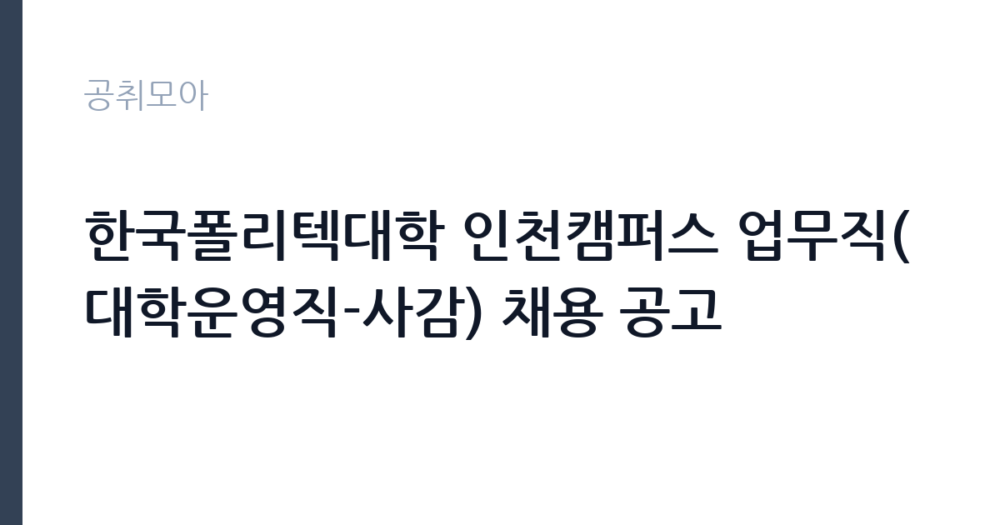

[공공기관] 한국폴리텍대학 인천캠퍼스 업무직(대학운영직-사감) 채용 공고
학교법인한국폴리텍 · 인천 · 마감 2026-11-11 (D-8) · 출처 잡알리오

한눈에 보는 모집 조건
| 기관 | 학교법인한국폴리텍 |
|---|---|
| 공고명 | 한국폴리텍대학 인천캠퍼스 업무직(대학운영직-사감) 채용 공고 |
| 고용형태 | 정규직 |
| 근무지 | 인천 |
| 게시일 | 2026-11-03 |
| 마감일 | 2026-11-11 (D-8) |
지원자격, 이렇게 읽으세요
- 학교법인 한국폴리텍 인사규정 제19조의 결격사유에 해당하지 않는 자로서 아래의 자격기준(업무직 운영규칙 별표2)을 충족하는 자
- 교원자격증 소지자 또는 채용 예정 직무와 동일한 업무에서 근무경력이 있는 자 우대
- 최종합격자 발표 이후 임용 예정일에 근무 가능한 자
정규직 채용은 기간의 정함이 없는 근로계약을 전제로 합니다. 수습 기간을 두고 평가한 뒤 정규직으로 확정하는 절차가 일반적이며 기관의 인사 규정과 임금 체계를 적용받습니다. 이번 공고는 학교법인한국폴리텍이 직접 진행하는 자체 전형입니다. 기숙사 사감은 학사 학위 이상을 요구하는 경우가 많고, 학생 생활 지도나 시설 관리 경력을 우대합니다. 대학회계직으로 채용되면 대학의 자체 인사 규정과 임금 기준을 적용받고, 계약 기간이 정해지는 경우가 일반적입니다. 상주 근무라면 숙소 제공 여부와 근무 시간 산정 방식이 실질적인 조건이므로 공고문에서 확인해야 합니다. 결격사유 조회와 신원 확인 절차가 뒤따릅니다. 경력 인정 여부는 증명서 기재 내용으로 결정되므로 직무 기술을 상세히 요청하십시오. 경력 요건은 총 경력이 아니라 해당 직무 경력만 인정하는 경우가 있으니, 증명서의 직무 기술을 함께 확인하십시오. 자격 취득 예정자는 채용 공고의 예정자 허용 조항을 먼저 확인해야 합니다. 조항이 없으면 지원 자체가 반려될 수 있습니다. 이 공고 원문에 적힌 응시 조건 문구는 '(학력·성별) 제한 없음' / '학교법인 한국폴리텍 인사규정 제19조의 결격사유에 해당하지 않는 자로서 아래의 자격기준(업무직 운영규칙 별표2)을 충족하는 자' / '교원자격증 소지자 또는 채용 예정 직무와 동일한 업무에서 근무경력이 있는 자 우대'입니다. 문구를 그대로 읽고 본인 해당 여부를 하나씩 표시해 두면 서류 단계에서 탈락하는 일을 줄일 수 있습니다.
이 공고의 포인트
이 건은 학교법인한국폴리텍이 같은 시기에 낸 4개 모집분야 가운데 기숙사 사감 직무입니다. 다른 직무 공고와 요건이 다르므로 지원 전에 모집분야 표를 대조해야 합니다. 이 공고의 첫 번째 포인트는 고용 형태입니다. 수습 기간 평가를 통과하면 기간의 정함이 없는 신분이 되어 고용이 안정됩니다. 두 번째는 업무 범위가 명확하다는 점입니다. 기숙사 사감 직무로 채용되므로 배치 이후 담당 업무가 크게 흔들리지 않습니다. 세 번째는 근무지입니다. 인천 지역 근무로 접근성은 좋지만 그만큼 지원자가 몰리는 지역이므로 경쟁률을 넉넉히 잡아야 합니다. 선발 절차가 단순한 편이어서 서류와 면접 준비에 집중할 수 있습니다. 선발 인원은 공고문에 명시되어 있으니 모집분야 항목을 함께 확인하십시오.
전형은 어떻게 진행되나
전형은 서류심사와 면접심사를 기본으로 하고 직무에 따라 필기나 실기, 체력검정이 추가됩니다. 서류 단계에서는 응시자격 충족 여부와 제출서류 형식을 확인하며 이 단계에서 탈락하는 지원자가 적지 않습니다. 면접은 직무 이해도와 경험을 확인하는 방식으로 진행되고 발표는 개별 통보나 홈페이지 게시로 이뤄집니다. 최종합격 이후에는 결격사유 조회와 채용 신체검사가 이어지며 이 절차에서 문제가 확인되면 합격이 취소될 수 있습니다. 구체적인 전형 단계와 배점은 공고문에 표로 정리되어 있으니 원문을 기준으로 준비하십시오. 면접조 편성과 대기 시간이 공지되므로 당일 도착 시간을 여유 있게 잡으십시오.
원문에서 확인한 전형 방식
다음 각 항의 조건을 모두 충족하는 자 ○ (학력·성별) 제한 없음 ○ (연령) 정년(만 60세) 미만 ※ 단, 남자의 경우 병역을 필하거나(임용 예정일까지 전역 가능한 자 포함) 면제된 자 ○ 학교법인 한국폴리텍 인사규정 제19조의 결격사유에 해당하지 않는 자로서 아래의 자격기준(업무직 운영규칙 별표2)을 충족하는 자 - 해당 직무 수행이 가능한 자 - 교원자격증 소지자 또는 채용 예정 직무와 동일한 업무에서 근무경력이 있는 자 우대 ○ 최종합격자 발표 이후 임용 예정일에 근무 가능한 자
이런 분께 추천해요
- 학생 생활 지도 경험이 있는 분
- 야간·상주 근무가 가능한 분
- 시설 점검과 문서 관리를 성실히 할 수 있는 분
지원 전 체크리스트
- 응시자격 요건과 경력 기준을 충족하는가 — 경력은 증명서로 입증해야 합니다
- 수습 기간과 정규직 전환 조건을 확인했는가
- 제출서류 목록을 모두 준비했는가 — 누락 시 서류 단계에서 탈락합니다
- 접수 마감 2026-11-11 이전에 접수 방식을 확인해 제출했는가
모집 일정과 제출 타이밍
2026-11-03에 공고가 올라왔고 접수는 2026-11-11까지입니다. 남은 기간은 8일이며, 이 기간에 자격증 사본과 경력증명서, 주민등록등본 같은 기본 서류를 모두 준비해야 합니다. 경력증명서는 발급에 며칠이 걸리는 경우가 있으니 가장 먼저 신청하십시오. 접수는 온라인과 우편·방문으로 나뉘는 경우가 많고, 우편 접수는 도착 기준으로 판정되므로 마감일 소인만 믿으면 안 됩니다. 면접 일정은 서류 발표 후 개별 통보되므로 제출 후에도 연락을 받을 수 있도록 유지해야 합니다. 서류 발표일과 면접일 사이가 짧은 경우가 많아 면접 준비는 접수와 동시에 시작하는 편이 좋습니다.
직무 이해하기: 공공기관
교육기관은 학교 교육과 교원 연수, 교육 행정을 담당합니다. 교육청은 관내 학교를 지원하고, 대학은 학사와 연구, 학생 지원 업무를 운영합니다. 예산과 인사 규정이 교육부 지침과 자체 규정을 함께 따르므로 절차가 엄격합니다. 기숙사 사감은 학생 생활관의 운영과 학생 생활 지도를 맡습니다. 출입 통제와 외박·복귀 확인, 야간 점호, 시설 이상 유무 점검을 담당하고, 생활관 규칙 위반이나 분실·고장 같은 문제를 처리합니다. 방학 중에는 입퇴사 정리와 시설 점검, 물품 관리 업무가 늘어납니다. 학생 상담과 응급 상황 대응도 업무에 포함되므로 야간에 연락을 받을 수 있어야 합니다. 근무 형태가 교대·격일제이거나 생활관 내 숙소에 상주하는 경우가 있습니다. 업무 도구와 장비는 기관이 지급하며, 지급 품목과 교체 주기는 부서 규정을 따릅니다. 현장 업무와 사무 업무의 비중은 기관의 사업 일정에 따라 계절별로 달라집니다. 이 건의 근무 대상 지역·부서는 원문 기준 '대학운영직-사감'입니다 원문에 '한국폴리텍 인사규정 제19조의 결격사유에 해당하지 않는 자로서 아래의 자격기준(업무직 운영규칙 별표2)을 충족하는 자'라는 조건이 명시되어 있습니다.
자기소개서 작성 팁
지원서는 학생을 대면해 지도한 경험을 구체적으로 쓰는 것이 효과적입니다. 기숙사·동아리·교육 프로그램에서 생활 지도를 맡았던 사례를 적고, 갈등을 줄인 방식을 설명하십시오. 시설 점검과 물품 관리 경험도 직무 연관성이 높습니다. 상주 근무가 가능하다는 점과 장기 근무 의사를 함께 밝히십시오. 문항별 글자 수 제한을 먼저 확인하고, 각 문항의 첫 문장에 결론을 배치하는 방식이 읽기 쉽습니다. 지원 동기는 기관의 어떤 사업에 기여하겠다는 한 문장으로 시작하고, 이어서 본인의 경험을 근거로 붙이십시오. 감점을 피하려면 다른 기관에 보낼 수 있는 범용 문장을 그대로 쓰지 않는 것이 중요합니다. 기관 이름과 사업명이 문장 안에 자연스럽게 들어가야 준비도가 드러납니다.
면접 준비 포인트
면접에서는 생활 지도 방식과 상황 대응을 확인합니다. 학생이 규칙을 반복해서 어길 때 어떻게 지도할지, 야간에 응급 상황이 생기면 어떤 순서로 조치할지 묻습니다. 처벌보다 규칙과 절차를 알려주는 태도를 보여주는 것이 좋습니다. 상주·야간 근무를 감당할 수 있다는 점을 분명히 밝히십시오. 모르는 질문에 추측으로 답하면 감점 요인이 되므로, 확인 후 답하겠다고 밝히는 편이 안전합니다. 직무 특성상 체력이나 근무 시간에 대한 질문이 나올 수 있으므로 솔직하게 답하고 관리 계획을 함께 제시하십시오.
급여·근무조건 읽는 법
대학회계직 보수는 대학의 자체 임금 기준을 따르며, 기본급에 수당과 상여가 더해집니다. 사감 업무는 숙소 제공이나 야간 근무수당이 붙는 경우가 있어 현금 보수 외 조건도 함께 따져야 합니다. 구체적 금액과 근무 시간 산정 방식은 공고문 처우 항목에서 확인하십시오. 다만 학교법인한국폴리텍의 보수 수치는 이 글에서 확인된 공시 자료가 없어 추정해 제시하지 않았습니다. 공고문 처우 항목과 첨부된 보수표를 기준으로 확인하십시오. 알리오 2025년 결산 공시 기준 공공기관 전체 일반정규직 1인당 평균보수는 7,376만 9천원, 신입사원 평균초임은 4,031만 6천원입니다(무기계약직 미포함). 2026년 적용 최저임금은 시급 10,320원, 월 환산 2,156,880원(주 40시간·209시간 기준)입니다. 고용노동부 고시 제2025-47호로 확정된 금액입니다. 공고문에 금액이 제시되지 않은 항목은 원문 보수표나 처우 설명에서 확인해야 하며 확인되지 않은 수치는 쓰지 않는 것이 원칙입니다. 비교할 때는 월 급여뿐 아니라 상여·명절휴가비·복지포인트·초과근무수당까지 포함한 연간 총액으로 계산하십시오. 기간제라면 계약 기간 동안의 총액을, 무기계약이라면 호봉 상승과 정년까지의 누적 소득을 기준으로 판단하는 편이 정확합니다.
자주 묻는 질문
- 선발 인원은 몇 명인가요?
공고문의 모집분야 항목에 직종별 인원이 표로 제시되어 있습니다. 첨부된 공고문 원문에서 확인하십시오. - 근무지는 어디인가요?
인천 지역의 학교법인한국폴리텍 소속 근무지입니다. 세부 주소와 출퇴근 조건은 원문 공고문에서 확인할 수 있습니다. - 보수는 얼마인가요?
채용 신분(정규직)과 기관 임금 규정에 따라 정해지며 구체적인 금액은 공고문 처우 항목에 제시됩니다. 금액이 공개되지 않은 경우에는 원문의 보수표를 확인하십시오.
함께 보면 좋은 공고
[공공기관] 한전KDN(주) 경남사업처 배전자동화 성능관리분야 비정규직 모집공고 — 마감 2026-11-18[공공기관] 한국폴리텍대학 남대구캠퍼스 업무직(대학운영직_조리사) 채용(2차) 공고 — 마감 2026-11-11[공공기관] 한국폴리텍대학 남대구캠퍼스 행정지원직원(휴직대체_학사지원직) 채용 공고 — 마감 2026-11-11출처: 잡알리오 공개정보를 바탕으로 공취모아가 정리한 안내글입니다. 모집 조건·일정은 변경될 수 있으니 지원 전 반드시 원문 공고문을 확인하세요. 본 글은 정보 제공용이며 합격을 보장하지 않습니다.